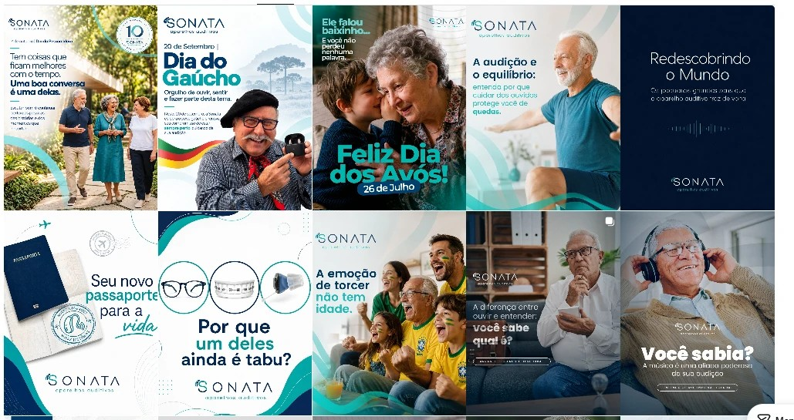
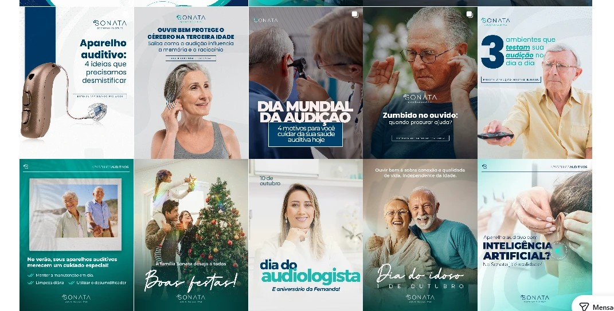
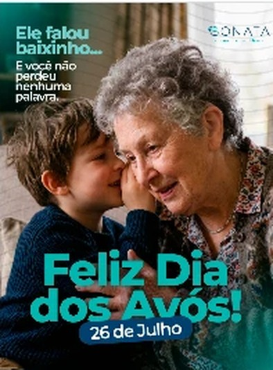
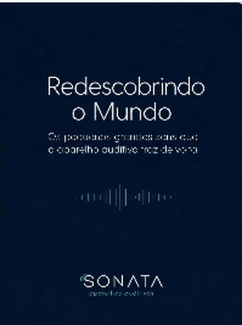
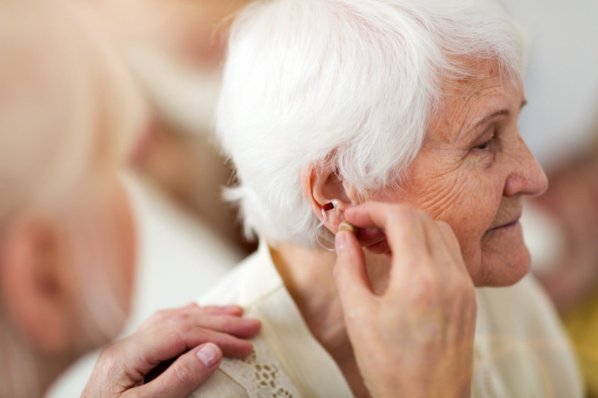
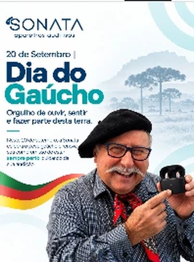
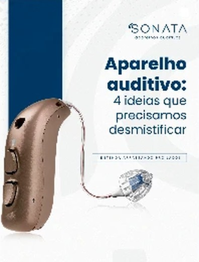
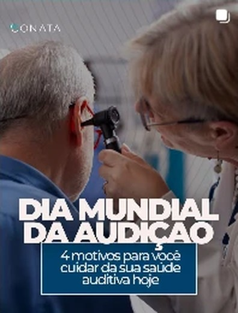
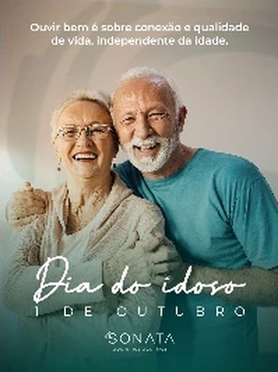

Design system · redes sociais
Versão 2 · para aprovação
Um sistema visual para organizar e profissionalizar a presença da Sonata nas redes: foto, cor, letra, grid, elementos e modelos que pessoas e ferramentas de IA conseguem repetir.
Ponto de partida
A Sonata já tem presença digital: site, feed ativo, fotos de gente de verdade e o rosto das sócias. Este estudo pega o que já funciona, transforma em regra e define o que muda, para que cada post pareça da mesma marca, seja quem for que o produza.
famílias de cor, marinho e verde-água, 10 tons cada.
família de letra, a Poppins do site, com papéis fixos.
modelos de post em feed, story e quadrado.
O que estamos aprovando
Diagnóstico do feed atual

132 554
111 34O que fica
A frase leve com a palavra que vibra"Redescubra o prazer de ouvir": Poppins fina com uma palavra em negrito itálico. Vira a assinatura tipográfica.

Foto estourada, gente juntaA foto ocupa o post inteiro, de perto, com emoção real.

Marinho com respiroFundo escuro, letra leve, linha de som.
O rosto das sóciasAs fonos dão confiança. Ganham um modelo próprio.
Conceito
A Sonata não vende aparelho: devolve conversa, risada, música e a voz de quem a gente ama. O som chega em ondas, e as ondas são a linguagem do sistema, nos arcos, nos véus, na faixa que sobe da base e no ritmo entre cheio e vazio.
Próxima
Gente junta, "você", "a gente".
Efetiva
Uma ideia por post.
Profissional
Grid fixo, assinatura da fono.
Cuidadosa
Respiro e letra grande.

Para quem falamos
Ela, 60+
Aposentada, classe AB, ativa. É quem mais aceita o tratamento, cuida do aparelho e muitas vezes compra também para o marido.
Os filhos que cuidam
De 50 a 65 anos, classe AB. Procuram segurança e informação clara para os pais.
menor texto no post; corpo a partir de 38 px.
contraste mínimo, conferido em todas as combinações.
palavras no máximo por arte.
Voz
| Em vez de | Escreva |
|---|---|
| Não sofra mais com a surdez! | Volte a escutar quem você ama. |
| A melhor tecnologia do mercado | Pequeno no ouvido. Enorme na conversa. |
| Promoção imperdível!!! | Seu aparelho novo a partir de R$ 125 por mês. |
| Idosos com perda auditiva | Quem já não escuta como antes |
| Bateria de lítio com 24 h | Carregue à noite. Converse o dia inteiro. |
Pilares de conteúdo
Afeto
Vida, convivência, datas. frase-foto · frase · data
Cuidado
Saúde auditiva explicada. educativo · carrossel
Tecnologia
Aparelhos. tecnologia
Sonata
Fonos, pacientes, condições. fono · depoimento · oferta
Como o perfil fica
Fotos estouradas e cheias de gente, alternando com posts de cor que respiram. A mesma letra, os mesmos véus e arcos, o logo sempre no mesmo canto. A variedade vem das pessoas e das pautas, não da forma.
Fotografia
Faixa em ondaA cor sobe da base e segura rótulo, título, subtítulo e logo.
Painel lateral60% de cor com borda ondulada; a pessoa fica à direita.
Arco de cantoPara frases curtas: nasce do canto, como as ondas do "S".
Cor
Branco e dois cinzas (#3E4A57, #5F6B78) só para texto. Nenhuma outra cor entra na arte, nem em datas.
Fundos
ClaroBranco com halo água. Educativo, fono, miolo.
BrumaÁgua-50 com halo. O respiro com cor.
ÁguaÁgua-400, texto marinho. Datas e números.
MarinhoTexto branco. Tecnologia e impacto.
MarÁgua profunda até marinho. Capas e noite.
Contraste
Hoje no site
Branco sobre água-400: 1,8:1. Some para quem enxerga menos.
No sistema
Marinho-900 sobre água-400: 8,9:1.
| Texto | Fundo | Contraste | Uso |
|---|---|---|---|
| ■ marinho-700 | branco | 11,1:1 | Títulos no claro |
| ■ cinza-700 | branco | 9,0:1 | Apoio e corpo |
| ■ água-700 | branco | 5,4:1 | Rótulo, ênfase pequena |
| ■ água-600 | branco | 3,7:1 | Só ênfase de título, 64 px+ |
| ■ marinho-200 | marinho-800 | 9,7:1 | Apoio no marinho |
| ■ água-400 | marinho-800 | 7,6:1 | Ênfase no marinho |
| ■ água-300 | água-800 | 5,5:1 | Ênfase no mar |
Tipografia · Poppins
Redescubra o prazer de ouvir.
A fonte do site ganha papéis fixos. A frase em Light 300, a voz calma. De 1 a 3 palavras em ExtraBold 800 itálico, a palavra que vibra. Sempre à esquerda, em caixa baixa de frase.
Manuscrito (Ms Madi): só em datas, 1 a 4 palavras, nunca a única fonte da informação.
Grid e espaçamento
Feed 1080 × 1350Margem 96. 6 colunas de 128 com calha de 24.
Quadrado 1080 × 1080Margem 88.
Story 1080 × 1920Topo 250 e base 320 livres.
Escala de espaço (px no post)
Rótulo → título 24 · título → apoio 32 · texto → foto 48 · apoio → CTA 64 · margem 96.
Hierarquia
Elementos
As duas ondas que abraçam o "S" viram os arcos de escuta e as máscaras em onda: a borda ondulada que segura o texto leva sempre duas linhas de eco, como o som se espalhando. Sobre a foto, as ondas ficam finas e brancas ao redor de quem escuta.
Elementos
Logo
Marinho: fundos claros, água e véus claros.
Branco: marinho, mar e véus escuros.
Verde-água: só sobre marinho-800 e 900.
Modelos · Afeto
frase-foto · faixaGente junta no alto, faixa em onda com o texto, ondas finas ao redor de quem escuta.
frase-foto · arcoFrase curta no arco que nasce do canto.
fraseSem foto: o vazio é o protagonista.
dataA faixa leva a data e o manuscrito.
Modelos · Cuidado
educativoPainel lateral ondulado, foto estourada à direita, assinatura da fono.
carrossel · capaFoto no alto, faixa com a promessa.
carrossel · passoA foto sobe da base numa onda.
carrossel · fimA fono como rosto do convite.
Modelos · Tecnologia e Sonata
tecnologia · recorteO aparelho flutua no centro dos anéis.
tecnologia · fotoUso real, faixa em onda marinho.
fonoA sócia no alto, dica e nome na faixa.
depoimentoSem foto, a frase da paciente ocupa o post.
ofertaSelo, preço e um CTA. 1 em 5 posts.
Formatos
frase-foto · story
educativo · story
oferta · story
frase · quadradoPara anúncio e WhatsApp. No story, topo 250 e base 320 ficam livres de texto.
O passo à frente

→
→
→
→O que muda
| Hoje | No sistema Ondas |
|---|---|
| Várias fontes cursivas e condensadas | Poppins com papéis fixos e um único manuscrito, só em datas |
| Ondas e formas diferentes a cada post | Máscaras em onda, arcos de escuta e linha de som, tirados do logo |
| Fotos em caixas e texto solto sobre a imagem | Foto sempre estourada, texto sempre sobre máscara de cor em onda |
| Verdes soltos e cores de data na arte | Duas escalas fechadas de 10 tons e cinco fundos |
| Texto branco sobre verde-água | Texto marinho sobre água, contraste conferido |
| Letras de 20 a 24 px no post | Mínimo de 28 px; corpo a partir de 38 px |
| Logo e quantidade de texto variando | Logo em posição fixa; até 35 palavras, o resto na legenda |
Com inteligência artificial
1 · Pauta
A equipe descreve o post e os dados confirmados.
2 · Guia
Instrução pronta com regras, cores, letras e limites.
3 · Ficha
Modelo, tema, título com ênfase, subtítulo, texto, foto e rosto.
4 · Motor
Monta o post, dimensiona a máscara, enquadra o rosto e aponta o que fere as regras.
5 · PNG
1080 px, pronto para revisar e publicar.
{
"modelo": "educativo",
"tema": "claro",
"rotulo": "Saúde auditiva",
"titulo": "A adaptação é feita *com calma*, no seu tempo.",
"apoio": "Ajustamos o aparelho com você, em mais de uma visita.",
"corpo": "Cada retorno afina o som para a sua rotina.",
"legenda": "Por Daiana Cardoso Kuse, fonoaudióloga",
"foto": { "src": "ajuste-aparelho", "rosto": "76% 40%" }
}
→
Entregáveis e próximos passos
Entregue
Pendências
Aprovação
| Item | Página | Aprovado | Ajustar | Observações |
|---|---|---|---|---|
| Conceito | p. | |||
| Voz e vocabulário | p. | |||
| Pilares e mix | p. | |||
| Fotografia | p. | |||
| Cores | p. | |||
| Tipografia | p. | |||
| Grid e tamanhos | p. | |||
| Elementos | p. | |||
| Logo | p. | |||
| Modelos de post | p. | |||
| Uso com IA | p. |
Marque cada item. O que ficar em "ajustar" volta numa versão 2 com as observações anotadas; o que for aprovado já vale para os próximos posts.
Daiana Cardoso Kuse
Fonoaudióloga · sócia da Sonata
Fernanda Brugiolo
Fonoaudióloga · sócia da Sonata
Data: ______ / ______ / __________